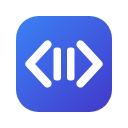

CodeAlong
Coding tutorials that wait for you.
1. Connect VS Code
CodeAlong has two halves. This Chrome extension pauses and plays the video; the VS Code extension notices when you are coding. They talk only to each other, on this computer.
Looking for VS Code…
Install CodeAlong for VS Code and keep VS Code open. This page updates by itself.
2. Follow a tutorial
- Pin CodeAlong: click the puzzle-piece icon in Chrome's toolbar, then the pin next to CodeAlong.
- Open a coding tutorial (YouTube, Laracasts, Vimeo or any site with a regular video player).
- Click the CodeAlong icon and choose Follow this tab. Only that tab is ever controlled.
3. Just code
| When you… | CodeAlong… |
|---|---|
| start typing in VS Code while the video plays | pauses the video |
| stop typing for 5 seconds | rewinds 2 seconds and continues |
| save the file | continues about a second later |
| pause the video yourself | never starts it again by itself |
Stay in control
| Action | In VS Code | In Chrome |
|---|---|---|
| Pause or play | Ctrl+Alt+P | Alt+Shift+P |
| I'm done – continue now | Ctrl+Alt+D | Alt+Shift+D |
| Turn CodeAlong off for a while | Click CodeAlong in the status bar | Switch in the toolbar popup |
Timing (idle delay, rewind, resume on save) lives in VS Code: Settings → search for "CodeAlong".
Privacy
No account, no cloud and no analytics. Your code never leaves VS Code; only signals like "typing" and "saved" travel to Chrome, over a connection that stays on your computer. Read the privacy policy.